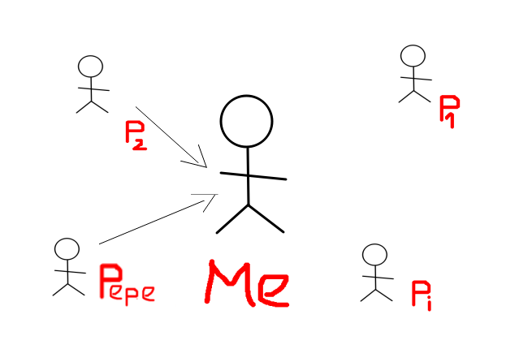

Following y Followers:
Más que números
Marta Gómez y Braulio Vargas
Twitter Friends
- Aplicación Django que genera una red con nuestros contactos en Twitter.
- Dicha red se construye guardando los "siguiendo" (amigos) de un usuario y los de sus amigos.
¿Cómo funciona?
- Usa Tweepy para descargar datos de Twitter.
- Empezando por el usuario que lanza la aplicación, descarga sus amigos y todos los amigos de sus amigos.
- Estos datos se guardan en una base de datos sqlite3
- Desde el navegador, el usuario selecciona en qué formato quiere la red y la aplicación se la devuelve.
Conectando con Tweepy
import tweepy
from os import environ
from findfriends.models import TwitterUser
environ.setdefault("DJANGO_SETTINGS_MODULE",
"TwitterFriends.settings")
# Las claves de acceso a twitter están definidas como
# variables de entorno
auth = tweepy.OAuthHandler(environ["TWITTER_CONSUMER_KEY"],
environ["TWITTER_CONSUMER_SECRET"])
auth.set_access_token(environ["TWITTER_ACCESS_TOKEN"],
environ["TWITTER_ACCESS_TOKEN_SECRET"])
api = tweepy.API(auth_handler=auth,
wait_on_rate_limit_notify=True,
wait_on_rate_limit=True)
Modelo de Usuario de Twitter
class TwitterUser(models.Model):
# id numérico del usuario en twitter.
user_id = models.IntegerField(unique=True)
# nombre de usuario en twitter (@...).
screen_name = models.CharField(unique=True, max_length=50)
# flag para saber si es una cuenta verificada
is_verified = models.BooleanField()
# localización del usuario
location = models.CharField(max_length=50)
# lista de amigos del usuario.
friends = models.ManyToManyField('self', symmetrical=False,
blank=True)
def __str__(self):
return self.screen_name
Guardando usuarios
def save_user(user):
if not TwitterUser.objects.filter(user_id=user.id).exists():
print("Saving: ",user.screen_name)
u = TwitterUser()
u.user_id = user.id
u.screen_name = user.screen_name
u.is_verified = user.verified
u.location = user.location
u.save()
else:
print(user.screen_name, " is already on the data base")
def get_and_save_friends(user_id):
global n_calls
for friend in tweepy.Cursor(api.friends,
user_id=user_id, count=200).items():
save_user(friend)
# guardamos el objeto usuario del usuario
# identificado en la base de datos
me = api.me()
save_user(me)
# guardamos sus amigos y los amigos de sus
# amigos en la base de datos
get_and_save_friends(user_id=me.id)
amigos = api.friends_ids(user_id=me.id)
for amigo in amigos:
get_and_save_friends(user_id=amigo)
Creando las relaciones de amistad
# function to save frienship on database
def create_frienship(api, userid):
user = TwitterUser.objects.get(user_id=userid)
if len(user.friends.all()) == 0:
friends = api.friends_ids(user_id=userid)
print("Saving ", user.screen_name, "'s friends")
for friend in friends:
if TwitterUser.objects.filter(user_id=friend)
.exists():
u = TwitterUser.objects.get(user_id=friend)
print(u.screen_name, " is friend of ",
user.screen_name)
user.friends.add(u)
else:
print(user.screen_name, "'s friends are
already saved")
me = api.me()
# guardamos los amigos del usuario identificado
amigos = api.friends_ids(user_id=me.id)
create_frienship(api=api, userid=me.id)
# guardamos los amigos de los amigos del usuario identificado
for amigo in amigos:
if TwitterUser.objects.filter(user_id=amigo).exists():
create_frienship(api=api, userid=amigo)
Una forma diferente de extraer datos...
Este tipo de datos en forma de grafo nos permite extraer información distinta a la que podríamos obtener estudiando únicamente los RT, MG o número de seguidores del usuario.
- Detección de comunidades.
- Detección de personas más influyentes o populares.
- Estudio de la influencia/alcance de un usuario concreto en una red.
Una forma diferente de extraer datos: influencia de Python Granada en Twitter
Antes de empezar...
¿Qué son las redes de amistad?
Following
En Twitter, todos seguimos a ciertas personas
Followers
Y también nos siguen ciertas personas, que no tienen por qué ser nuestros following
Como es el caso de Pepe.
Tanto los Following como los Followers forman grafos dirigidos, donde las aristas representan la relación de seguimiento.
Por tanto, si fusionamos ambos grafos, podemos obtener una representación de la red de seguimiento en Twitter o...